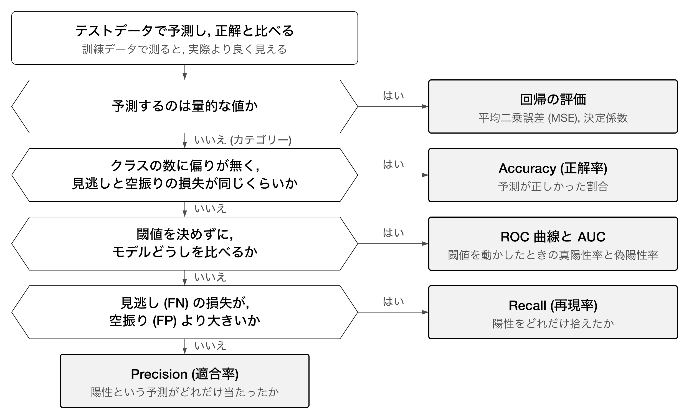
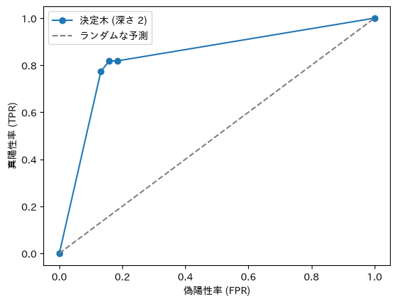

分類の評価
評価指標の選び方
モデルの予測の良さを測る指標は, 予測する値の種類と, 予測を何に使うかで選びます. 次の図を上からたどって指標を選んでください. 「はい」なら右の指標へ, 「いいえ」なら下の問いへ進みます.

評価の手順と指標は, 次のリンク先で説明します.
- テストデータで予測し, 正解と比べる: 訓練データとテストデータ
- 回帰の評価: 回帰分析の回帰の評価
- Accuracy, Recall, Precision: Accuracy, Precision, Recall
- ROC 曲線と AUC: ROC 曲線と AUC
分類の指標はどれも, 混同行列の 4 つの数から計算します. 図の FN (見逃し) と FP (空振り) は混同行列のマスの名前で, 閾値は ROC 曲線と AUC で定義します. クラスの数が偏っているときに Accuracy で判断しない理由と, 見逃しと空振りの損失の比べ方は, Accuracy, Precision, Recall で例を使って説明します.
訓練データとテストデータ
モデルの性能を学習に使ったデータで測ると, 実際より良く見えることがあります (回帰モデルの評価と同じ理由です). 決定木の深さを制限せずに学習させると, この違いを確かめられます.
for depth in [2, None]: # None は深さを制限しない
t = DecisionTreeClassifier(max_depth=depth, random_state=0).fit(X_train, y_train)
print(depth, t.score(X_train, y_train), t.score(X_test, y_test))
"""
2 0.9 0.8333333333333334
None 1.0 0.7833333333333333
"""深さを制限しない木は, 訓練データを 1 人残らず正しく分類しています (正解率 1.0). しかしテストデータの正解率は 0.78 で, 深さ 2 の木 (0.83) より下がっています. 深い木は, 訓練データにたまたま含まれていた細かい違いまで分岐として覚え込むので, 新しいデータには役立たない分岐が増えます. 訓練データでは性能が高いのに, 新しいデータでは性能が上がらない (あるいは下がる) 状態を過学習といいます.
モデルの目的は, 結果がまだ分からない新しいデータを予測することです. そのため, 学習には使わずに取っておいたテストデータで性能を測ります. train_test_split はデータをランダムに分けるので, random_state で乱数を固定しておくと, 何度実行しても同じ分け方になります.
この節に対応する演習は, Exercise DSP6-1です.
混同行列
正解率だけでは, どんな誤り方をしているかが分かりません. 分類の結果は, 正解と予測の組み合わせごとにデータの数を数えた表で確かめます. この表を混同行列といいます.
見つけたいクラス (ここでは退会) を陽性, もう一方 (継続) を陰性と呼ぶと, 2 クラスの混同行列は次の 4 つのマスからなります.
| 正解 \ 予測 | 陰性 (継続と予測) | 陽性 (退会と予測) |
|---|---|---|
| 陰性 (実際は継続) | TN (真陰性) | FP (偽陽性) |
| 陽性 (実際は退会) | FN (偽陰性) | TP (真陽性) |
T (True) と F (False) は予測が正しいかどうか, P (Positive) と N (Negative) は予測したクラスを表します. 例えば FN は「陰性と予測したが, それは誤りだった」, つまり退会を見逃した会員です.
from sklearn.metrics import confusion_matrix
print(confusion_matrix(y_test, pred))
"""
[[33 5]
[ 5 17]]
"""confusion_matrix の出力は上の表と同じ並びで, TN = 33, FP = 5, FN = 5, TP = 17 です. 実際に退会した 22 人のうち 17 人を退会と予測し, 5 人を見逃しました. 継続した 38 人のうち 5 人を, 誤って退会と予測しています.
この節に対応する演習は, Exercise DSP6-2です.
Accuracy, Precision, Recall
混同行列の 4 つの数から, 目的に応じた指標を計算します.
- Accuracy (正解率): 全体のうち, 予測が正しかった割合.
\text{Accuracy} = \frac{TP + TN}{TP + TN + FP + FN}
- Precision (適合率): 陽性と予測したもののうち, 実際に陽性だった割合. 陽性という予測がどれだけ信頼できるかを表す.
\text{Precision} = \frac{TP}{TP + FP}
- Recall (再現率): 実際に陽性だったもののうち, 陽性と予測できた割合. 陽性をどれだけ見逃さずに拾えたかを表す.
\text{Recall} = \frac{TP}{TP + FN}
決定木の予測では, 次のようになります.
- Accuracy: (17 + 33) / 60 \approx 0.833
- Precision: 17 / (17 + 5) \approx 0.773
- Recall: 17 / (17 + 5) \approx 0.773
from sklearn.metrics import accuracy_score, precision_score, recall_score
print(accuracy_score(y_test, pred), precision_score(y_test, pred), recall_score(y_test, pred))
"""
0.8333333333333334 0.7727272727272727 0.7727272727272727
"""Accuracy だけで判断しない理由は, クラスの数に偏りがあるときに分かります. 例えば, 退会する会員が全体の 5% しかいない店で「全員が継続する」と予測するモデルは, Accuracy が 0.95 になります. しかし退会する会員を 1 人も見つけられないので, Recall は 0 です.
Precision と Recall のどちらを重く見るかは, 予測を何に使うかで決まります. 退会しそうな会員に割引券を送るなら, 見逃し (FN) は会員を失うことに, 空振り (FP) は割引券 1 枚分の費用につながります. 会員を失う損失の方が大きければ, 空振りが増えても Recall を上げたいと考えます. 逆に, 1 件ずつ担当者が電話をかけるような費用の大きい対応なら, Precision を重く見ます.
この節に対応する演習は, Exercise DSP6-2です.
ROC 曲線と AUC
決定木は, 各データについて陽性である確率を出し, その確率が 0.5 を超えるなら陽性と予測しています (ちょうど 0.5 のときは陰性). この 0.5 を閾値といいます. 閾値を下げると陽性と予測する会員が増え, Recall は上がりますが, 空振り (FP) も増えます. 閾値を変えたときのこの関係をまとめて見るのが ROC 曲線です.
- 真陽性率 (TPR, True Positive Rate): Recall と同じ. 実際の陽性のうち, 陽性と予測できた割合.
\text{TPR} = \frac{TP}{TP + FN}
- 偽陽性率 (FPR, False Positive Rate): 実際の陰性のうち, 誤って陽性と予測した割合.
\text{FPR} = \frac{FP}{FP + TN}
閾値を 1 から 0 まで下げていくと, 陽性と予測する会員が増え, TPR と FPR はどちらも 0 から 1 へ増えていきます. 横軸に FPR, 縦軸に TPR をとり, 閾値ごとの点を結んだ曲線を ROC 曲線 (Receiver Operating Characteristic curve) といいます.
from sklearn.metrics import roc_curve, roc_auc_score
prob = tree.predict_proba(X_test)[:, 1] # 退会である確率
fpr, tpr, thresholds = roc_curve(y_test, prob)
print(roc_auc_score(y_test, prob))
"""
0.8349282296650719
"""
plt.plot(fpr, tpr, marker='o', label='決定木 (深さ 2)')
plt.plot([0, 1], [0, 1], linestyle='--', color='gray', label='ランダムな予測')
plt.xlabel('偽陽性率 (FPR)')
plt.ylabel('真陽性率 (TPR)')
plt.legend()
plt.show()
plt.close()
曲線が左上に寄るほど, 空振りを増やさずに陽性を拾えている良いモデルです. 左上の角 (FPR = 0, TPR = 1) は, すべての陽性を空振りなしで拾える完全な予測にあたります. 灰色の対角線は, 確率をでたらめに付けた場合 (どの閾値でも TPR と FPR が等しい) です.
ROC 曲線の下側の面積を AUC (Area Under the Curve) といいます. AUC は 0 から 1 の値をとり, 完全な予測なら 1, でたらめな予測なら 0.5 です. AUC は「退会した会員と継続した会員を 1 人ずつ選んだとき, 退会した会員の方に高い確率を付けている割合」とも解釈できます. 閾値を 1 つに決めなくてもモデルの良さを比べられるのが, AUC の利点です. この決定木の AUC は 0.835 です.
決定木の ROC 曲線は, 数個の点を結んだ折れ線になっています. 決定木が出す確率は, データが最後に行き着いた箱 (葉) の中の退会の割合なので, 深さ 2 の木では 4 通りの値しかとらないためです. 閾値の候補が少ないので, 閾値を細かく調整することはできません.
この節に対応する演習は, Exercise DSP6-3です.